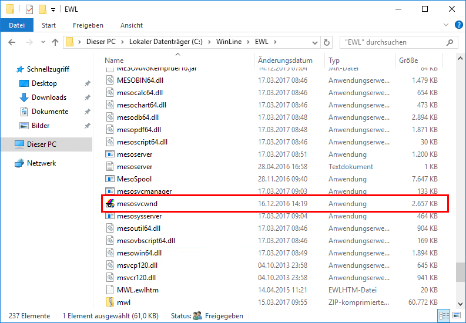
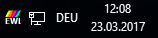
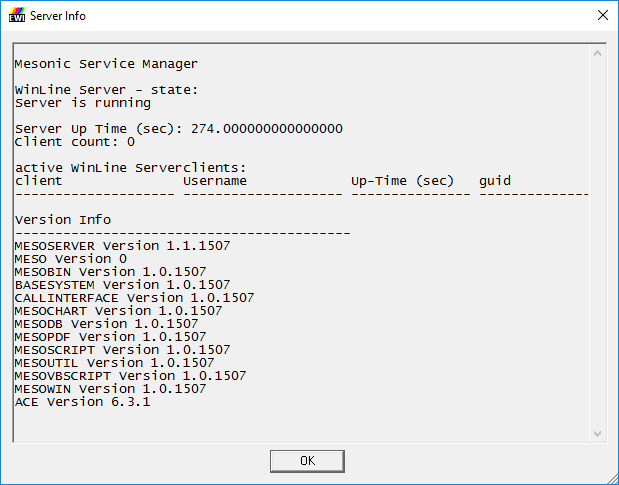

¨ WinLine Server Dienst
Um den Serverdienst des WinLine Servers zu starten bzw. zu stoppen kann das "Mesonic EWL Server Dienstprogramm" verwendet werden.

Dieser kann im EWL Verzeichnis durch Ausführen der Datei "mesosvcwnd.exe" via "cmd.exe" gestartet werden.

Dadurch wird das "Mesonic EWL Server Dienstprogramm"-Symbol im Tray angezeigt.
Achtung:
Damit der WinLine Server über dieses Tray Icon gestartet werden kann ist es notwendig, dass der Dienst "Mesonic EWL Service Manager" vorhanden bzw. installiert ist.
Durch Anwählen des "Mesonic EWL Server Dienstprogramm"-Symbols mit der rechten Maustaste kann der WinLine Server (sowie der EWL Manager Dienst) gestartet bzw. beendet werden, oder es können die Server Info angezeigt werden:

Ø Server starten
Mit diesem Eintrag wird der WinLine Server gestartet.
Ø Server beenden
Durch Auswählen dieses Eintrages wird der WinLine Server inkl. zugehörigem Dienst beendet. D.h. nicht nur der WinLine Server wird dabei gestoppt, sondern es wird immer der Service mit gestartet bzw. gestoppt, der automatisch den WinLine Server startet.
Das Icon wird mit dem Status "online" bzw. "offline" angezeigt.
Während des Start- bzw. Stoppvorgangs wird das Tray-Icon ebenfalls aktualisiert.
Ø Serveraktivitäten protokollieren:
Alle Serveraktivitäten werden automatisch in die Datei "mesoserver.log" im Verzeichnis "EWL" gespeichert.